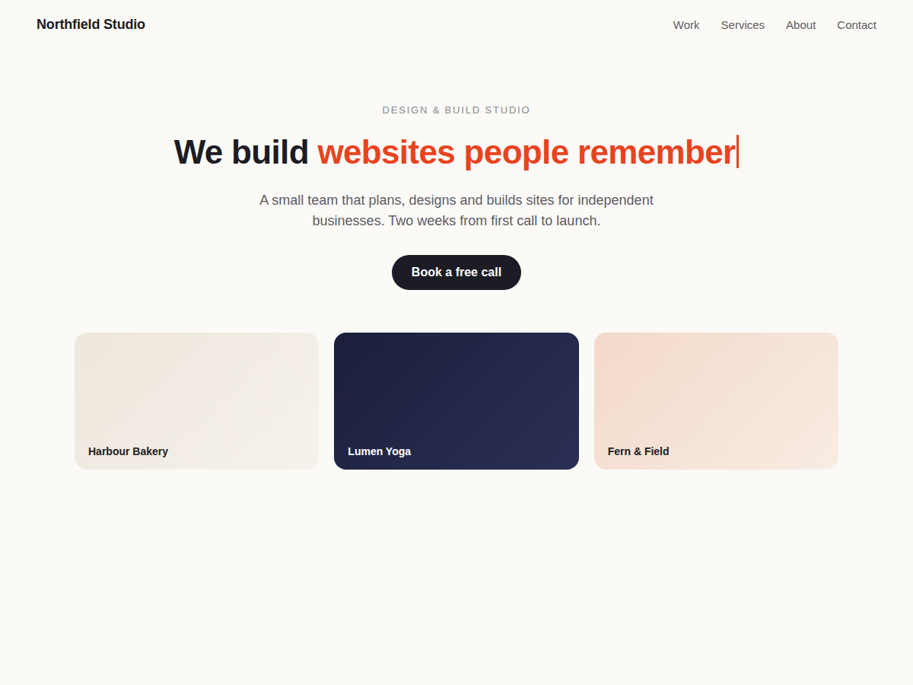

Typeline
Animated typing text with rotating words
- Typed phrases that delete and retype in a loop
- Your font, colours, size, speed and cursor
- Real text on first paint, no layout jump
- Shrinks on phones, readable by screen readers

What it does
A headline that types itself draws the eye: "We build" stays put, and "websites people remember" types out, pauses, deletes itself and makes room for "brands that stand out". Typeline adds that effect to any page as a widget.
You set everything in the editor's settings panel. Write the text before and after, then the typed phrases, one per line. Pick the font, size, colours and alignment, the typing speed, the pause on each phrase and the cursor. Each change shows in the editor at once.
Visitors see your real first phrase the moment the page opens, never a placeholder or a blank box. The widget keeps the height of your longest phrase, so the text under it doesn't jump while it types. On phones the text shrinks to fit the width. Screen readers and search engines get the whole sentence with every phrase, and visitors who ask their device for less motion get a still headline. The script is a few kilobytes and loads after your page.
The free plan types up to 3 phrases per widget, with no branding. Premium adds unlimited phrases, a highlight colour behind the typed words, typing that starts when the widget scrolls into view, random order, and block or underscore cursors.
Price
Free
- Up to 3 typed phrases per widget
- Font, colours, size, speed, pause and cursor
- No branding on your site
Premium
$5/month, $48/year ($4/month billed yearly)
- Unlimited phrases per widget
- Highlight colour behind the typed words
- Start typing when scrolled into view
- Random order and block or underscore cursors